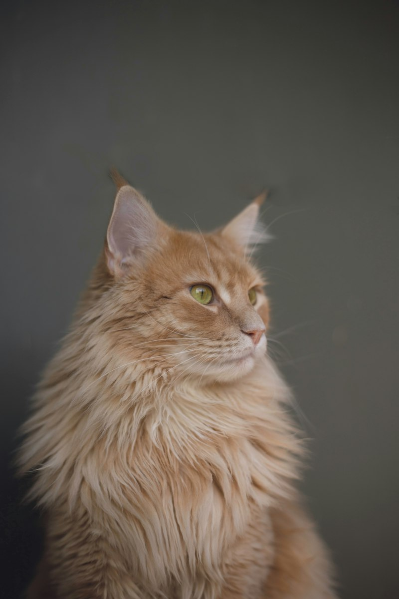
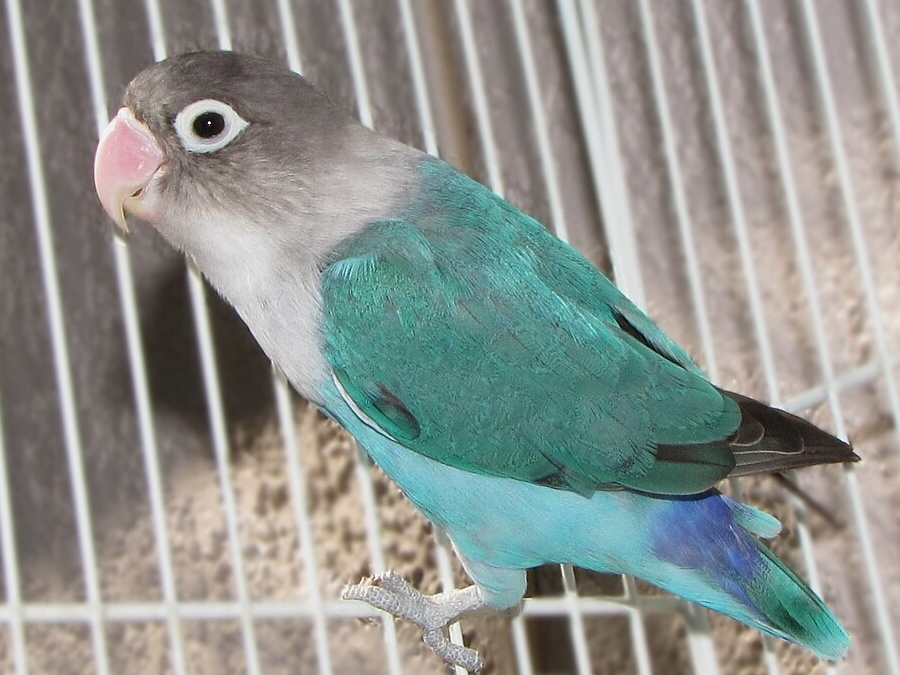

COMPANION PETS
Cats
Enquire with the shop about current availability and suitable food and care essentials.
Ask about catsExplore categories for cats, Persian cats, cockatiels, birds, blue mask lovebirds, rabbits and turtles. Contact the Wagholi shop to confirm current availability and care details.
These photos are representative examples, not confirmation of current shop stock. Use the search and category filters below to explore available pets & birds.
8 categories available
Enquire with the shop about current availability and suitable food and care essentials.
Ask about cats
Ask about availability, appropriate housing, diet and everyday care supplies.
Ask about cockatiels
Enquire with the shop about Persian cat availability, grooming advice and nutrition essentials.
Ask about Persian cats
Ask about availability, appropriate cages, seed blends, and care essentials for lovebirds.
Ask about lovebirds
Ask the shop about available birds, suitable enclosures, food and everyday care supplies.
Ask about birds
Enquire about current availability and the habitat, food and supplies a rabbit needs.
Ask about rabbits
Check with the shop for availability and ask about a suitable enclosure and care items.
Ask about hamsters
Ask the team about current availability and the setup and care requirements before considering a turtle.
Ask about turtlesNo matching pets or birds found. Try another search or category filter.
Animal availability can change. Photos are illustrative and are not photos of the shop’s current animals. Please confirm current stock, suitability and care requirements with My Nature Aquatics before visiting.


.jpg){kind=link}